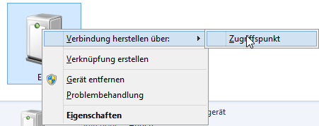
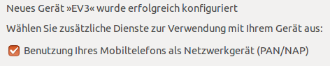
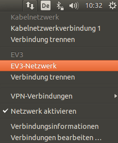
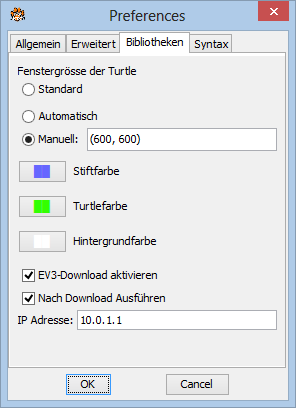
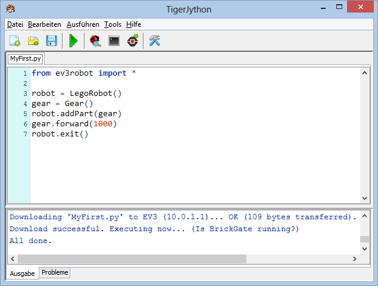

EV3 installieren
1 SD-Karte mit leJOS EV3 erstellen
Der EV3-Brick startet standardmässig mit einem Menü von LEGO Mindstorms. Damit der Brick Python-Scripts ausführen kann, müssen Sie eine SD-Karte mit der leJOS EV3-Distribution erstellen, die zusätzlich einen unter Linux laufenden Python-Interpreter enthält. Ist diese SD-Karte beim Einschalten des Roboters eingesteckt, startet der EV3 automatisch mit einem leJOS Menü. Wird die Karte wieder entfernt, können Sie den Brick wieder standardmässig mit dem LEGO-Menü verwenden.
- Nehmen Sie eine leere Micro SD-Karte mit mindestens 4 GB und maximal 32 GB Speicherkapazität
- Stecken Sie diese Karte mit einem USB-Kartenleser in Ihren Computer
- Eine neue SD-Karte enthält üblicherweise eine leere FAT32 formatierte primäre Partition und kann sofort verwendet werden. Bei bereits gebrauchten SD-Karten solllten Sie mit einer Datenträgerverwaltung überprüfen, ob die Karte eine leere FAT32 Partition enthält. (Eine bereits im EV3 verwendete Karte enthält eine 500 MB FAT Partition. Der übrige Teil ist Ext2-formatiert und enthält das Linux-Dateisystem. Es genügt daher nicht, die Karte zu formatieren, sondern sie muss neu partitioniert werden. Unter Windows können Sie die Karte mit dem Gratis-Werkzeug MiniTool Partition Home Edition neu partitionieren, indem Sie alle vorhandenen Partitionen löschen und eine einzige FAT32 Partition erstellen.)
- Laden Sie die Datei ev3sdcard.zip (ca. 70 MB) herunter, packen Sie sie aus und kopieren Sie alle Dateien auf die SD-Karte.
Sie finden danach folgende Dateien/Verzeichnisse:

2 leJOS auf EV3 starten
- SD-Karte einschieben
(Beschriftung nach oben) und EV3 einschalten
- Auf dem EV3-Display erscheint nach kurzer Zeit der leJOS-Start-Bildschirm. Wird hingegen das Lego-Menü gestartet, so ist Ihre Karte nicht korrekt konfiguriert. Überprüfen Sie, dass tatsächlich eine primäre 4 - 32 GB grosse FAT32-Partition vorliegt und alle Dateien/Verzeichnisse vorhanden sind.
- Beim ersten Start wird die SD-Karte automatisch neu partitioniert. Deswegen müssen Sie ca. 20 Minuten Geduld haben. Danach erscheint auf dem EV3-Display das leJOS-Menü. Sie können jetzt die Karte immer eingesteckt lassen
- Schalten Sie den EV3 aus und starten Sie ihn neu
3 Mit dem EV3 verbinden
Alle Verbindungen mit dem EV3 benützen das TCP/IP Protokoll, aber beim physikalischen Transportkanal kann es sich um USB, Bluetooth oder WLAN handeln. Der EV3 antwortet auf Ping-Requests und Sie können damit am einfachsten überprüfen, ob die Verbindung zum EV3 klappt. Die Standard-IP-Adresse für Bluetooth und USB ist 10.0.1.1. Diese Adresse wird auch auf dem leJOS Startbildschirm angezeigt.
Sie können sich über USB, Bluetooth oder WLAN mit dem EV3 verbinden, aber wir empfehlen Ihnen Bluetooth zu verwenden, da Sie dabei ohne Kabel und zusätzlichen WLAN-Adapter auskommen. (Informationen, wie Sie sich mit USB oder WLAN verbinden, erhalten Sie hier.) Um eine IP-Verbindung über Bluetooth aufzubauen, wird das Bluetooth Personal Area Netzwerk (PAN) Protocol verwendet.
Da standardmässig Bluetooth auf dem EV3 eingeschaltet ist, sind auf dem EV3 keine weiteren Einstellungen nötig, um die Verbindung über Bluetooth zu verwenden. Sie müssen allerdings den PC mit dem EV3 paaren, so wie Sie es mit irgendeinem anderen Bluetooth-Gerät gewohnt sind und den EV3 als PAN Access Point definieren. Das Vorgehen hängt vom verwendeten Betriebssystem ab.
Bluetooth PAN unter Windows:
- Führen Sie, so wie Sie es mit anderen Bluetooth-Geräten gewohnt sind, eine Bluetooth-Suche durch und paaren Sie den EV3. Bestätigen Sie den Sicherheitscode (Kennung) mit OK, obschon Sie ihn auf dem EV3 nicht sehen
- Nach dem Paaren (und jedes Mal, wenn der EV3 neu eingeschaltet wird) müssen Sie den EV3 als Zugriffspunkt definieren. Gehen Sie dazu in der Systemsteuerung unter Geräte und Drucker und führen Sie einen Rechtsklick auf das EV3-Symbol aus. Wählen Sie dann: Verbindung erstellen über: -> Zugriffspunkt.
|
 |
Bluetooth PAN unter Linux (Ubuntu):
- Paaren Sie den EV3 und aktivieren Sie unter Bluetooth Einstellungen die Checkbox "Benutzung Ihres Mobiltelefons als Netzwerkgerät (PAN/NAP)"
|
 |
- Nach dem Paaren und jedes Mal, wenn der EV3 eingeschaltet wird, müssen Sie den EV3 als aktiven IP Zugriffspunkt (Access Point) auswählen. Unter der Netzwerk Ikone klicken Sie auf EV3 Netzwerk. Nach einer kurzen Zeit erscheint eine Bestätigungsmeldung über die erfolgreiche Verbindung.
|
 |
Bluetooth PAN unter MacOS:
- Klicken Sie auf die Bluetooth-Ikone und führen Sie eine Bluetooth-Suche durch. Paaren Sie den EV3, wobei Sie den passkey ignorieren. Im Bluetooth Control Panel erscheint als EV3* (nicht verbunden)
- Nach dem Paaren und jedes Mal, wenn der EV3 eingeschaltet wird, klicken Sie auf die Bluetooth-Ikone und setzten Sie den Cursor auf EV3. Wählen Sie "Mit Netzwerk verbinden"

|
|
Sie können den Bluetooth-Namen des EV3-Bricks im leJOS-Menü unter System - Change name ändern. Um den neuen Namen einzugeben, müssen Sie den Cursor-Block mit den Cursor-Tasten auf das gewünschte Zeichen verschieben und mit der Enter-Taste bestätigen. Der neue Name ist unten am Display sichtbar. (U steht für Grossbuchstaben (uppercase), l für Kleinbuchstaben (lowercase), X für Löschen und D für Beenden (Done)). Um den neuen Namen zu bestätigen, müssen Sie auf D fahren und Enter drücken. Damit dieser aktiv wird, booten Sie den EV3 neu.
4 BrickGate starten/updaten
Bei der Ausführung von Python-Scripts auf einem externen PC/Smartphone, aber auch mit dem lokalen EV3-Python-Interpreter greifen diese auf die Lego-Hardware (Motoren, Sensoren, usw.) über den BrickGate-Server zu. Es handelt sich dabei um einen TCP/IP-Gateway, der die codierten Befehle des Pythonprogramms empfängt, sie interpretiert und die entsprechenden Aktionen unter Verwendung der Java-basierten leJOS-Klassenbibliothek ausführt. Zudem zeigt BrickGate auf dem EV3-Display die im Linux-Dateisystem gespeicherten Python-Scripts an und ermöglicht es, sie für den autonomen Modus mit den EV3-Buttons auszuwählen und zu starten.
BrickGate ist in der Distribution der SD-Karte bereits enthalten. Das Programm ist nach der Grundinstallation im EV3-Menü unter Programs sichtbar und kann dort gestartet werden. Falls Sie das Programm aus Versehen gelöscht haben oder es auf die neuste Version updaten wollen, so können Sie es jederzeit von hier downladen.
Download BrickGate
Beim Download wird BrickGate.jar und ein dazugehörender Bibliotheksordner ev3robot von unserem Webserver auf den EV3 übertragen. Dabei muss der EV3 über Bluetooth (oder USB, WLAN) mit dem Computer verbunden sein und der Computer einen Internetzugang haben.
(Der Link ist ein WebStart, der die Installation des Java Runtime Environment (JRE) voraussetzt. Beim Start wird normalerweise eine Sicherheitswarnung ausgelöst. Sie können diese positiv bestätigen, da eine Signatur von Comodo für ACE information technology AG, Switzerland vorliegt. Für die Installation unter Linux, siehe Anhang)
Es ist vorteilhaft, BrickGate als Default Programm zu wählen, damit Sie beim Einschalten des EV3 Brickgate mit einem einzigen Klick starten können. Gehen Sie wie folgt vor: Nachdem Sie mit dem Enter-Button auf BrickGate.jar geklickt haben, blättern Sie mit dem Left-Button im EV3-Menü, bis die Option Set as Default erscheint. Bestätigen Sie die Auswahl mit dem Enter-Button.
5 Ihr erstes Programm im direkten und autonomen Modus
- Starten Sie TigerJython
- Klicken Sie auf das Symbol Einstellungen und wählen Sie das Register Bibliotheken. Aktivieren Sie die Checkbox EV3-Download aktivieren und Nach Download ausführen:

- Beenden Sie TigerJython und starten Sie neu
- In der Ikonenleiste des Editors erscheint eine neue Ikone mit einem EV3-Button-Symbol, die für EV3-Robotik verwendet wird.
- Schreiben Sie ein kurzes Programm unter dem Namen MyFirst

- Führen Sie das Python-Script im direkten Modus aus: Klicken Sie auf den grünen Pfeil Ausführen. Es erscheint ein Dialogfenster, in dem nach der IP-Adresse des EV3 gefragt wird. Bestätigen Sie den Standardwert 10.0.1.1 durch Drücken von OK. Das Script wird nun auf dem PC ausgeführt und die Befehle über Bluetooth an den EV3-Brickgate-Server gesendet. Dieser spielt zur Bestätigung der erfolgreichen Verbindung eine Melodie und bewegt sich kurz vorwärts. Beim Verbindungsabbruch ertönt eine zweite Melodie
- Führen Sie dasselbe Python-Script im autonomen Modus aus: Klicken Sie die EV3-Ikone. Im Ausgabe-Fenster erscheint eine Bestätigung für den erfolgreichen Download und das Script startet mit dem Python-Interpreter des EV3 automatisch. Es sendet wiederum Befehle an den BrickGate-Server, allerdings nun über eine lokale (interne) IP-Verbindung (localhost). Der EV3 spielt zur Bestätigung der erfolgreichen Verbindung eine Melodie und bewegt sich wiederum kurz vorwärts. Beim Verbindungsabbruch ertönt eine zweite Melodie

Das Python-Script, das auf dem EV3-Brick im Ordner /home/python/scripts gespeichert ist, erscheint automatisch im BrickGate-Menü. Mit den Up-Down-Buttons kann der Pfeil verschoben werden und mit Enter wird das Script vollständig eigenständig auf dem EV3-Brick erneut ausgeführt, auch wenn dieser nicht mehr mit einem PC verbunden ist.

Im autonomen Modus werden bei fehlerhaften Programmen keine Fehlermeldungen angezeigt. Immerhin kann ein blockierendes Programm mit der Tastenkombination Down+Enter abgebrochen werden. Dabei wird allerdings auch der BrickGate-Server beendet und muss neu gestartet werden. Es ist deswegen vorteilhaft, Programme zuerst im direkten Modus zu entwickeln und zu testen und erst danach im autonomen Modus laufen zu lassen.
(Falls Sie sich näher für das Linux-Betriebssystem interessieren und Python (oder Java) auf dem EV3 lokal ausführen wollen, so öffnen Sie eine SSH shell. Weitere Informationen finden Sie hier.)
Anhang: Installation der JRE und des Webstart-Browser-Plugins unter Linux (Ubuntu)
Führen Sie in einem Terminal folgende Befehle aus:
sudo add-apt-repository ppa:webupd8team/java
sudo apt-get update
sudo apt-get install oracle-java7-installer |